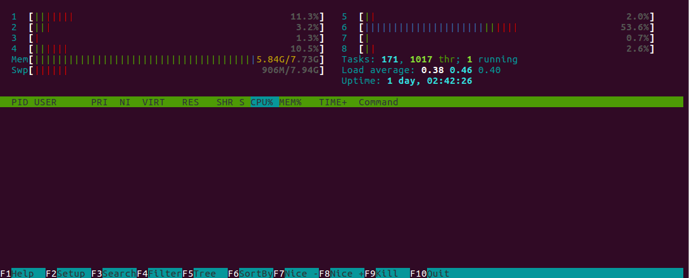
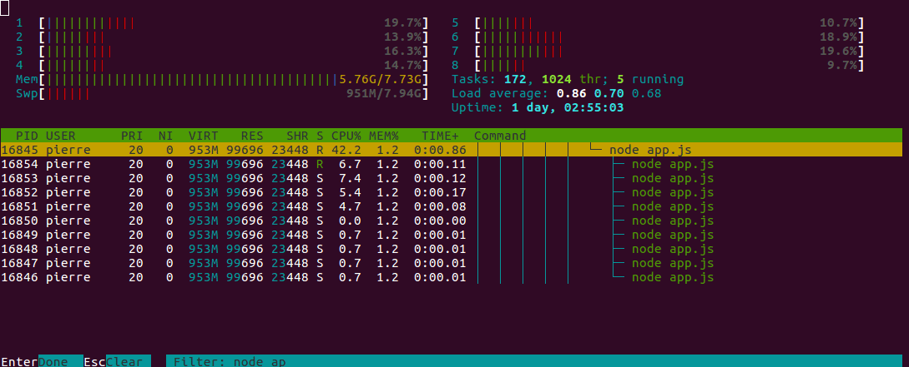

Les streams permettent d'effectuer des traitements sur des fichiers volumineux sans surcharger la mémoire. Pour cela, ils traitent les fichiers par morceaux (chunks).
On peut distinguer 2 principaux type de streams :
Dans un premier temps, nous allons créer un programme pour copier un fichier.
Nous allons donc lire le fichier puis créer un nouveau fichier en utilisant fs.readFile() et fs.writeFile() :
const fs = require('fs');
fs.readFile('file.avi', (err, data) => {
if (err) throw (err)
fs.writeFile('file2.avi', data, err => {
if (err) throw (err)
console.log('End of copy');
});
});Si l'on execute le programme précédent avec un fichier ayant une taille de 1.6Go, voici ce qui se produit :
L'ensemble du fichier est chargé en mémoire afin de pouvoir effectuer la copie et presque 20% de la mémoire est utilisé.
Pour résoudre ce problème, nous allons utiliser les streams du module fs :
const fs = require('fs');
const readStream = fs.createReadStream('file.avi');
const writeStream = fs.createWriteStream('file2.avi');
readStream.pipe(writeStream);
writeStream.on('finish', () => console.log('End of copy'));Ici, nous créons 2 streams (lecture et écriture) et réalisons un lien entre eux avec la fonction pipe().
A présent, moins de 2% de la mémoire est utilisé et la vitesse de traitement reste la même.
Nous pouvons également écouter l'avancement pour afficher le pourcentage :
const fs = require('fs');
fs.stat('file.avi', (err, stat) => {
const { size } = stat;
const readStream = fs.createReadStream('file.avi');
const writeStream = fs.createWriteStream('file2.avi');
let progress = 0;
readStream.on('data', chunk => {
progress += chunk.length;
console.log(Math.round((progress / size) * 100) + "%");
});
readStream.pipe(writeStream);
writeStream.on('finish', () => {
console.log('End of copy');
});
});Afin de pouvoir effectuer du streaming vidéo, nous allons devoir retourner un header HTTP de ce type :
Status Code: 206 Partial Content
Accept-Ranges: bytes
Content-Length: 20801072
Content-Range: bytes 5668864-26469935/26469936
Content-Type: video/mp4Le header Content-Range indique en bytes : [debut]-[fin]/[total]
Vous pouvez récupérer dans la requête des informations sur la taille des données à retourner :
const range = req.headers.range;Actuellement, si nous affichons une vidéo sur notre page web, l'intégralité du fichier sera chargé en mémoire pour ensuite être envoyé au navigateur.
De plus, le player HTML du navigateur ne permettra pas de se déplacer dans la lecture de la vidéo.
Pour résoudre ce problème, nous allons donc utiliser un système de stream.